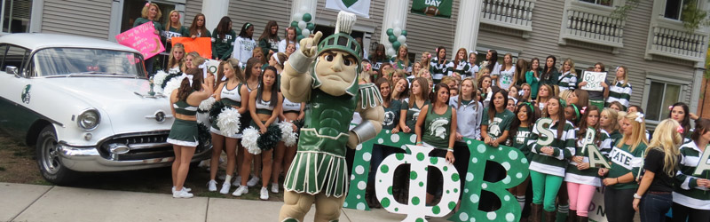

There are many opportunities to get invovled with Sparty! Sparty is always looking for help getting around to his various events in the state. Get the opportunity to join Sparty and be his escort for various events. If you are a student, take a chance to become the World's Greatest Mascot! Find more information on our tryout page.

Get Involved
Escort Sparty
Sparty cannot do everything on his own. He needs a few helpers to take him to his events. Get the oppourtunity to travel with Sparty around campus and take him to weddings, sporting events, or even birthday parties!
Become Sparty
Every year the search for the next Sparty begins. Tryouts are held during the fall semester and are open to current full-time MSU students. Keep posted to Sparty's social media outlets for more information on upcoming tryouts.
Donate
The Sparty Mascot Program is run by a student organization that is comprised of student volunteers who receive no academic or financial compensation. If you are interested in donating to the program please contact Dan DiMaggio at (517)355-4485.